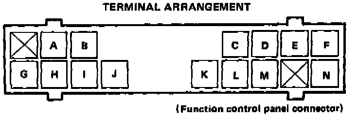
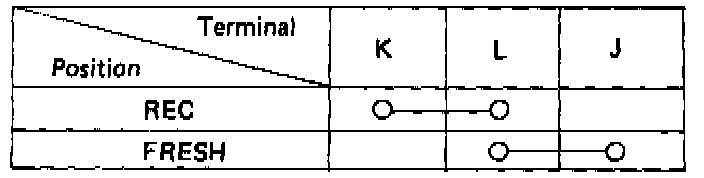
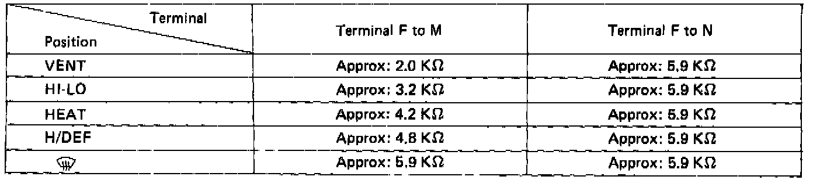

Non-Trouble Code Procedures

Control Panel Test
NOTE: Use the digital multimeter (KS-AHM-32-003) to check.

FRESH/REC Switch
Check for continuity between the terminals, as shown in the chart.

Function Switch
Check resistance between the terminals, as shown in the chart.